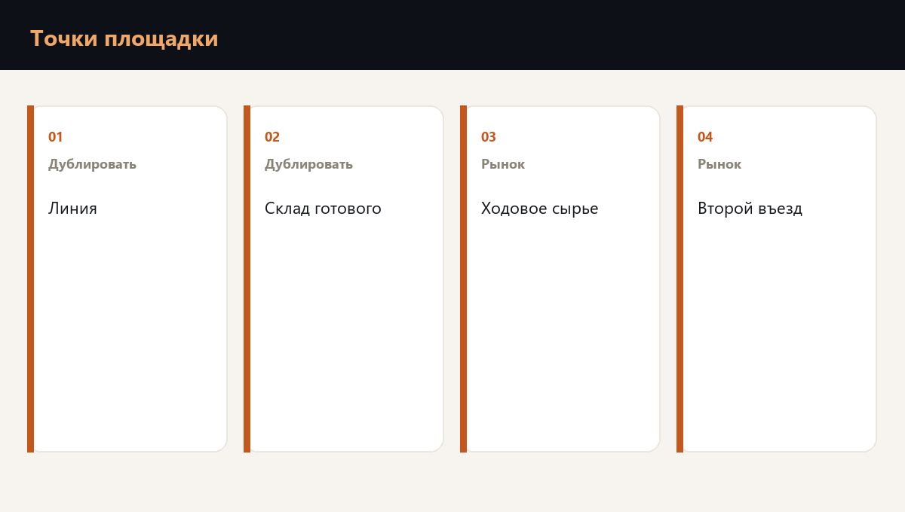

Вопрос, с которого стоит начать, звучит буднично: если завтра площадка встанет, какой день вы потеряете?
Ответ почти всегда про одно из знакомых мест. День, в который линия ничего не выпустила. День, в который готовая продукция лежит на складе, а уехать к заказчику не может. День, в который не пришло сырье или обычная упаковка. День, в который единственные ворота закрыты, и через них не проходит ничего: ни машина, ни смена.
Место, без которого этот день обнуляется, и называют единой точкой отказа. В опубликованном разборе небольшой логистической компании такой день уже посчитали: вышло около 180 тысяч рублей. На площадке считают так же, только сумму привязывают к конкретному месту. Из чего она складывается, разобрано в материале стоимость дня простоя.

Какой день пропадает, если встает именно это место
Если останавливается линия, завод в этот день ничего не выпускает. Договор о другом маршруте или о другой смене нужен заранее. Это второй способ сделать ту же продукцию, а не ящик запчастей на полке.
Если закрыт склад готовой продукции, цех еще может работать, а заказчик уже ничего не получает. Поэтому часть готового товара держат на второй площадке. Склад рядом с цехом, который только что встал, в этот день не помогает.
Сырье, которое продается каждый день, и обычную упаковку на следующий день покупают заново. Наемную смену тоже можно найти на рынке. Если же въезд один, стоит вся площадка: сырье не заезжает, готовое не уезжает, люди не проходят. Второй въезд готовят до события, а не утром.
Что покупают на следующий день, а что готовят сами
На рынке в большом количестве есть ходовое сырье, стандартная коробка и пленка, склад в аренду по соседству и люди на смену. Потеря здесь измеряется часами. Запас или договор на подмену возвращает поток.
Рецептуру, оснастку, единственную линию с долгой переналадкой и право подписи на отгрузку за день не купить. Склад, который ведет конкретный контракт заказчика, тоже. Это готовят заранее: дублируют, разносят по разным адресам или передают второму человеку на бумаге, пока первый еще на месте.
- Покупают на рынке. Ходовое сырье, обычная упаковка, аренда склада, наемная смена.
- Готовят сами. Оснастка, рецептура, единственная линия, подпись, без которой машина не уезжает.
- Проверка для собственника. Если место нельзя купить за день, у него есть пара в другом месте, а цена этого дня записана до события.
Где эту карту считают по вашей площадке
Проверка готовности к атаке БПЛА раскладывает площадку по этим местам, показывает, где день обрывается целиком, считает стоимость простоя и возврата выпуска и записывает, кто останавливает смену и кто пишет поставщику.
Сетка или навес над двором закрывают первый, физический шаг. Второй шаг остается на собственнике: карта мест, цена дня и решение, что готовить заранее. Без этого шага навес есть, а утреннего письма заказчику нет.
Частые вопросы
Именно с нее. Один въезд, одна линия и один склад совпали в одном месте. Карта нужна, чтобы решить, что разнести первым, пока все три еще работают.
Запас лежит рядом и кончается. Второй способ позволяет сделать ту же работу, когда первый недоступен, лучше на другом адресе.
Пока суммы нет, резерв под этот день не с чем сравнить. В логистическом разборе цифра появилась раньше следующего сбоя, и только тогда стало видно, что запаса денег под этот день нет.
Готова ли команда к первому часу кризиса
Планы проверяются не чтением, а сценарием. Диагностика покажет пробелы, корпоративный формат отрабатывает их с вашей командой на ваших процессах.